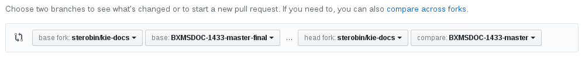
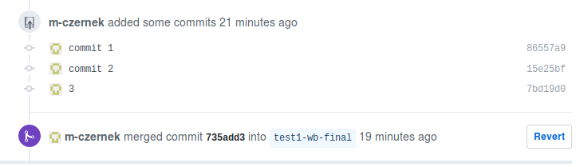
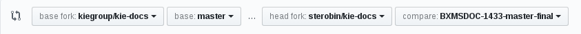

For KIE/BxMS documentation team members
Introduction
This guide provides information about the source repository for documentation of Drools and jBPM (community software), and BRMS and BPM Suite (Red Hat enterprise products), including its workflow, and the rules you must follow when contributing documentation to the repository.
This guide applies to both the community and enterprise versions, with the differences in content and/or process spelled out explicitly. If you have any questions, contact us.
To get started, read the Contributing to the kie-docs Repository section.
Technical Information
Repository, Files, and Processes
This section contains information about the source code, repository, and processes that are required when working with the KIE/BxMS repository.
1. General
1.1. System Requirements
To work with the KIE/BxMS repository, you need the following software:
1.1.1. Required
- Git
-
Git is a version-control system. To install Git on Fedora, CentOS, or RHEL, run the following command (in Fedora, replace
yumwithdnf):# yum install gitOn Windows, Mac OS X, and other Linux distributions, follow the instructions in the official Git documentation.
- Asciidoctor (enterprise documentation)
-
A quick and light tool for local builds that allows you to check factual correctness or flow of information. It does not require any additional packages to be installed, but its output differs visually (and to a very little extent in content[1]) from the final version that is built using Pantheon or ccutil.
To install Asciidoctor on Fedora, CentOS, or RHEL, run the following command (in Fedora, replace
yumwithdnf):# yum install asciidoctorOn Windows, Mac OS X, and other Linux distributions, follow the instructions in the official Asciidoctor documentation.
- Maven (community documentation)
-
A software project management and comprehension tool that can be used to build the community documentation set. To install Maven on Fedora, CentOS, or RHEL, run the following command (in Fedora, replace
yumwithdnf):# yum install mavenOn Windows, Mac OS X, and other Linux distributions, follow the instructions in the official Maven documentation.
1.1.2. Optional
- ccutil
-
A tool whose output greatly resembles the final document that is generated by Pantheon and pushed to production. Given this, it is the superior option when verifying content quality. However, it is much slower because it converts the input to DocBook first, and requires Red Hat brand packages and other tools that must be downloaded first.
To install ccutil, follow the instructions in the Pantheon User Guide.
If you encounter a Ruby-related error while running ccutil, try installing the following packages:
# yum install ruby-devel rubygem-nokogiri
- Meld
-
A graphical tool for comparing files. This tool is useful for comparing Git revisions and resolving merge conflicts.
To install Meld on Fedora, CentOS, or RHEL, run the following command (in Fedora, replace
yumwithdnf):# yum install meld
1.2. Repository
1.2.1. Repository Location
The repository with both the community and enterprise sources is located on GitHub. This repository is publicly accessible, but only members of the KIE/BxMS development and documentation teams can commit to it.
Previously, the enterprise documentation sources were hosted in an internal GitLab instance.[2] This repository is no longer used for development and does not accept any further code changes.
| To contribute to the repository, follow the instructions in Contributing to the kie-docs Repository. |
1.2.2. Filesystem Layout
The general structure of the repository follows the CCS-wide standard AsciiDoc repository layout with some changes.
. ├── docs (1) │ ├── optaplanner-wb-es-docs (2) │ │ └── src │ │ └── main │ │ └── asciidoc │ │ ├── bpms (3) │ │ │ ├── master.adoc (4) │ │ │ ├── master-docinfo.xml (5) │ │ │ └── (topics -> ..) (6) │ │ ├── brms │ │ │ ├── master.adoc │ │ │ ├── master-docinfo.xml -> ../bpms/master-docinfo.xml (7) │ │ │ └── (topics -> ..) (6) │ │ ├── *.adoc (8) │ │ └── (product-shared-docs -> ../../../../shared-kie-docs/src/main/asciidoc/Product) (9) │ ├── shared-kie-docs (10) | | └── src │ | └── main │ | └── asciidoc | | ├── Product (11) | | | ├── images (12) | | | | ├── foo.png | | | | └── ... | | | ├── author-group.adoc | | | ├── document-attributes.adoc | | | ├── document-attributes-bpms.adoc | | | ├── document-attributes-brms.adoc | | | ├── images | | | ├── legal-notice.adoc | | | ├── versioning-information.adoc | | | └── xpaas_maven_mirror_url.adoc | | | | | └── ... | ... └── README.adoc
| 1 | Directory with sources |
| 2 | A book directory (In this case, the Optaplanner/Business Resource Planner Guide). Note that the book has configuration for both the community and the enterprise products (brms for BRMS, bpms for the BPM Suite). |
| 3 | A product directory (In this case, Red Hat JBoss BPM Suite). For more information, see the paragraph below. |
| 4 | The Master AsciiDoc file (This is the file you compile when building the book). |
| 5 | A metadata file with information for Pantheon and/or ccutil. Asciidoctor or Maven do not use this file. |
| 6 | A symlink to the ../topics directory. This symlink has been removed from the repository due to the issues with Windows build tools. It is added at build time by the bxms-build script. |
| 7 | All enterprise product directories share the same master-docinfo.xml file with metadata, so it is symlinked here. |
| 8 | The directory with all the AsciiDoc source files for the particular book. You can find files for all the product configurations here (if applicable). |
| 9 | A symlink to the shared directory. Using this link, you can easily include shared files from the book’s private files. This symlink has been removed from the repository due to the issues with Windows build tools. It is added at build time by the bxms-build script. |
| 10 | The directory that contains files used in more than one book. This is a shared resource with community books. |
| 11 | The directory that contains files used in product books. |
| 12 | The directory with all the images from all product books. Since the path to this directory is set as the default images directory, you can include images simply by their name without a path. |
The brms and bpms enterprise product directories each contain files necessary for building the particular book for one of the enterprise products. Red Hat JBoss BRMS is shipped both as a part of Red Hat JBoss BPM Suite and as a separate product, so it requires its own documentation. If a product directory is missing, it means that the book does not exist for that particular product (for example, Red Hat JBoss BRMS has no Migration Guide available). The same applies for the community directory. If a book directory does not contain this subdirectory, the book is built only for enterprise.
1.2.3. Branches
The branches in the KIE/BxMS documentation repository are named as follows, and contain the following versions of the documentation:
| The version of the community and enterprise documentation in one branch may not be the same. Always check what version of the documentation you want to work on. |
| Branch Name | Community Version | Enterprise Version | Contents |
|---|---|---|---|
master |
7.0 and updates |
7.0 and updates |
Latest community upstream version |
6.5.x |
6.5 and updates |
N/A |
The source code for the enterprise documentation is not available for versions older than 7.0. |
$VERSION.x |
$VERSION and updates |
N/A |
The source code for the enterprise documentation is not available for versions older than 7.0. |
1.2.4. Metadata
In addition to book source files and images, the repository also contains metadata files that are necessary for building the documentation for production, including:
- docs/$BOOK/src/main/asciidoc/$PRODUCT/master-docinfo.xml
-
An XML file in each product subdirectory in a book’s main directory, which is used when building books internally for production. This file is not used when building the book with Asciidoctor.
All AsciiDoc attributes and other language constructs are replaced before the book is built, so they can be used to customize this file (typically
{PRODUCT_VERSION}inside the<productnumber/>XML tag).For more information about the
master-docinfo.xmlfile, see the Pantheon documentation.
- docs/shared-kie-docs/src/main/asciidoc/Product/document-attributes.adoc
-
An AsciiDoc file that contains the definitions of the attributes (entities in DocBook) used throughout the documentation.
The attributes defined in this file are used in all the product configurations of all books—community, Red Hat JBoss BRMS, and Red Hat JBoss BPM Suite. The repository also contains files with attributes for a particular enterprise product (
docs/shared/document-attributes-bpms.adocanddocs/shared/document-attributes-brms.adoc, specifically). These files are conditionally included at the end of this main definitions file, and the values in them overwrite the values defined previously.
2. Contributing to the kie-docs Repository
2.1. Overview
The kie-docs documentation workflow is based on topic branches as described in the the GitHub flow. Using topic branches, you do not commit changes directly to the mainline branch, but instead create a new branch (a topic branch) for every set of related changes (a topic). As an added layer of security, you work in your own fork of the upstream kie-docs GitHub repository, and push changes in your GitHub fork first to avoid introducing bugs upstream. After technical and stylistic reviews of the changes are complete, a team gatekeeper can then test and merge the pull requests into the appropriate upstream kie-docs branches.
The process for contributing to the kie-docs repository consists of the following steps:
2.2. Fork the kie-docs Repository and Add Remotes
You must use your own fork of the kie-docs repository to commit, push, and review changes before merging the changes (in branches) with the main upstream repository. This provides a safe testing ground to minimize problems upstream. When your contribution is finished, it is reviewed and added into the main repository.
Prerequisites
-
Git. For more information, see System Requirements.
-
Account on GitHub. Create one if you do not have it.
Procedure
-
In your browser, navigate to the kie-docs repository. Ensure you are logged in.
-
Click Fork.
If you are a member of a group on GitHub, you can get prompted to specify where to fork the repository. We recommend that you create the fork in your personal space. Wait for the repository to be forked. You will be redirected automatically into your forked repository.
-
In a terminal application, create a directory where you want to work in your forked repository, for example:
$ cd ~/$WORKSPACE $ mkdir $REPOSITORY_NAME #Example: `repos` -
Clone your forked repository:
$ cd ~/$REPOSITORY_NAME $ git clone git@github.com:$USER_NAME/kie-docs.gitThe
$USERNAMEis your GitHub user name. -
In the newly cloned
kie-docsdirectory, add the upstreamkie-docsrepository as an additional remote calledupstreamso that you can pull changes from the upstream to your forked repository:$ git remote add upstream https://github.com/kiegroup/kie-docs.git -
Verify that the upstream remote has been added:
$ git remote -vYou should see
origin(your forked repository) andupstream(upstreamkie-docsrepository).origin git@github.com:sterobin/kie-docs.git (fetch) origin git@github.com:sterobin/kie-docs.git (push) upstream https://github.com/kiegroup/kie-docs.git (fetch) upstream https://github.com/kiegroup/kie-docs.git (push)Consider renaming originyour GitHub user name to avoid confusion with other contributors' forks (also namedoriginby default) when you need to collaborate across forks. To rename your remote, go to thekie-docsrepository in your terminal application and rungit rename origin $USERNAME. Please note, however, that in any Git commands that refer tooriginyou will need to use the new remote name instead (example:git push --set-upstream $NEW_NAME $BRANCH_NAME)
2.3. Update Your Fork Branches
Before you begin working on new documentation changes, update the relevant branch in your fork against the upstream kie-docs repository to get the latest changes to that branch. If you do not update your fork branch before making your changes, your branch will be out of date and could result in merge conflicts when you merge.
Procedure
-
In your terminal application, change to the
kie-docsdirectory and fetch latest changes from all remote repositories (your fork, upstream, and any others you have added):$ cd $REPOSITORY_NAME/kie-docs $ git fetch --all -
Check out the branch that will be affected by your changes, rebase it against the upstream version to get the latest changes, and push to your fork.
You must rebase each branch individually against its upstream counterpart in order to get latest changes for that branch. This is important because typically you will need to merge documentation changes in both the masterbranch and the affected release-specific branch (example:7.3.x). For details, see Create a Release Working Branch and Cherry-Pick the Fork Pull Request.Example 1: Updating fork
masteragainst upstreammaster$ git checkout master $ git rebase upstream/master $ git pushExample 2: Updating fork
7.3.xagainst upstream7.3.x$ git checkout 7.3.x $ git rebase upstream/7.3.x $ git pushThe Branch Is Not Listed in My Terminal ApplicationTo bring the branch into your local directory, run
git checkout --track $FORK_REMOTE_NAME/$BRANCH_NAME. For example, if your fork remote isoriginand the branch that you need is7.3.x, then entergit checkout --track origin/7.3.x
2.4. Create Working Branches and Make Changes in Your Fork
After you have cloned and set up your forked repository, you can create working branches and make changes that you will commit and push to your GitHub fork before merging upstream.
Prerequisites
-
The upstream
kie-docsrepository has been forked and cloned in a local directory. See Fork the kie-docs Repository and Add Remotes for details. -
The branch that will be impacted by your changes (such as
master) has been updated. See Update Your Fork Branches for details.
Procedure
-
In your terminal application, change to your cloned
kie-docsrepository:$ cd $REPOSITORY_NAME/kie-docs -
Create two working branches: one for you to work in and one to use as the preliminary target branch within your fork to merge working-branch changes.
Although creating the additional target branch in your fork is not required, it is recommended for cleaner upstream pull requests. See Create a Pull Request in Your Fork and Assign SME and Peer Reviews for details. The branches must be based on the master branch into which you want to eventually merge.
The recommended naming format is
$JIRA_ID-$BASE_BRANCH(working branch) and$JIRA_ID-$BASE_BRANCH-final(preliminary target branch).Example: Creating branches for BXMSDOC-1433, based on
master$ git checkout master $ git branch BXMSDOC-1433-master # Working branch where you make changes $ git branch BXMSDOC-1433-master-final # Target branch that you will merge BXMSDOC-1433-master with when finished and use for SME/peer reviewsNote on Master vs. Release BranchesIf you are making a standard document update that applies to both the
masterand a release branch, such as7.3.x, then later you will also create a release-specific target branch in this same way (example:BXMSDOC-1433-7.3.x-final) and cherry-pick the changes that get merged into themastertarget branch (BXMSDOC-1433-master-final). For details, see Create a Release Working Branch and Cherry-Pick the Fork Pull Request.However, in the rare case that your document update applies to only a release branch and not to
master, such as a documented known issue for7.3.xthat will be resolved in future releases, then you would follow this same example to create7.3.xworking and target branches only (BXMSDOC-1433-7.3.xandBXMSDOC-1433-7.3.x-final), and nomasterworking branch. -
Navigate to the book and topic that you want to update:
$ cd $REPOSITORY_NAME/kie-docs/docs/$DOC_FOLDER/src/main/asciidocExamples:
-
To modify the community Drools documentation:
$REPOSITORY_NAME/kie-docs/docs/drools-docs/src/main/asciidoc. -
To modify the enterprise User Guide:
$REPOSITORY_NAME/kie-docs/docs/product-user-guide/src/main/asciidoc
Shared topic files and images are in the
shared-kie-docs:-
shared-kie-docs/src/main/asciidoc: Files shared both upstream and in enterprise books -
shared-kie-docs/src/main/asciidoc/Product: Files shared in enterprise books -
shared-kie-docs/src/main/asciidoc/Product/images: Images for enterprise books
The file is usually named the same as the header of the chapter or section it contains.
-
-
Check out your new working branch and open the file in an editor of your choice. If you do not know which editor to use, see System Requirements for a list of popular ones.
$ git checkout BXMSDOC-1433-master # Working branch that you created for these changes $ atom $FILE_NAME #Opens the file in the Atom text editor, for example -
Make the changes in the file and save your work.
When writing, be sure you follow all the requirements. If not, you can be asked to modify your contribution. You can also receive a pull request against the branch in your repository that rectifies the problems.
-
Build the book locally using the bxms-build tool to validate your changes. For more information about building books, see Building and Previewing.
-
Stage, commit, and push your changes to your GitHub fork. You should do this regularly, and in manageable increments. Large commits can be difficult to work with if merge conflicts arise.
$ cd $REPOSITORY_NAME/kie-docs/docs #Recommended to move back "up" in the directory to ensure all modified files are staged and committed. $ git add --all # Stage all changes, including deleted or renamed files. $ git commit -m "BXMSDOC-1433-master Add new section on Guided Decision Tables." #Commit changes with a summary message. $ git push #Push changes to your GitHub fork.
|
If this is your first push to the branch, you can get an error that a remote is not set for this branch. In that case, run Example: Run this command only once. When pushing the next time, run |
Related Information
-
Filesystem Layout contains information about the repository structure and where to find particular files.
2.5. Create a Pull Request in Your Fork and Assign SME and Peer Reviews
Before you create a pull request for upstream merging, consider creating an initial pull request in your fork first to merge your working branch with your preliminary target branch, for which an SME and peer can validate changes before you merge upstream. Although this initial in-fork pull request is not required, it creates a cleaner upstream pull request later and enables you to resolve potential merge conflicts before you create the upstream pull request.
If you choose to skip the in-fork pull request, your SME and peer reviews must be based on the upstream pull request, and you will need to cherry-pick changes from the final (SME and peer approved) upstream master pull request onto the release branch, if applicable.
|
Prerequisite
-
Your working and target branches have been created in your fork, and the working branch has been updated with changes. See Create Working Branches and Make Changes in Your Fork for details.
Procedure
-
In a web browser, go to your GitHub account and navigate to your personal fork of the
kie-docsrepository.Use only your fork for these steps, not the central kie-docsrepository. -
In the Pull requests tab, click New pull request and create a pull request for the working branch in your fork to be merged with the preliminary target branch in your fork that you created.
-
base fork:Your own fork ($USER/kie-docs) -
base:The preliminary target branch that the working branch will be merged with (BXMSDOC-1433-master-final) -
head fork:Your own fork -
compare:The working branch containing the changes to be merged (BXMSDOC-1433-master)
Figure 1. Example Pull RequestAfter you select to compare within your own fork, the base fork selection disappears. If you need to restore the fork selections for whatever reason, click compare across forks in the description above the forking options. -
-
In the pull request, add a link to the documentation JIRA and a link to the rendered output from your shared public directory.
-
After SME and peer reviews are complete, merge the pull request in your fork.
You do not need the gatekeeper to accept this first pull request in your fork. The gatekeeper only merges upstream pull requests, which come next.
-
As a precaution, after the pull request has been merged, change into the local
BXMSDOC-1433-master-finalbranch in your terminal application and rungit pull --rebaseto update your local branch with the merged version from your fork. Then rebuild the output locally to ensure that the updated branch builds successfully. For details about building locally, see Building and Previewing.
2.6. Create a Release Working Branch and Cherry-Pick the Fork Pull Request
|
Before you begin, please note:
|
The newly updated master-based branch in your fork (BXMSDOC-1433-master-final) can now be merged to upstream master, but it cannot be merged into the relevant release-specific branch, such as 7.3.x. To be able to merge the new changes into 7.3.x, you must first create a second working branch based on 7.3.x and cherry-pick the changes merged in BXMSDOC-1433-master-final.
Prerequisites
-
SME and peer have approved your changes, and your
masterworking branch (BXMSDOC-1433-master) has been merged with the target branch (BXMSDOC-1433-master-final) in your fork. See Create a Pull Request in Your Fork and Assign SME and Peer Reviews for details.
Procedure
-
In your terminal application, change to your
kie-docsfork and update the7.3.xbranch:$ git fetch --all $ git checkout 7.3.x # If the branch is not listed locally, use git checkout --track origin/7.3.x $ git rebase upstream/7.3.x $ git pushFor details, see Update Your Fork Branches.
-
Create a
7.3.xtarget branch and push to your fork:$ git checkout 7.3.x $ git checkout -b BXMSDOC-1433-7.3.x-final # New target branch that will cherry-pick BXMSDOC-1433-master-final $ git push --set-upstream origin BXMSDOC-1433-7.3.x-final #First-time push only. Next time use `git push`.For details, see Create Working Branches and Make Changes in Your Fork.
-
In a web browser, go to your GitHub account and navigate to your personal fork of the
kie-docsrepository. -
Select the
mastertarget branch that you previously merged (BXMSDOC-1433-master-final) and select Commits. -
Next to the Merge pull request commit in the commit history, copy or note the merge request hash (7-digit commit number). You can also click the Copy the full SHA clipboard icon to copy the full commit hash.
-
In your terminal application, ensure that you are in your newly created
7.3.xtarget branch (BXMSDOC-1433-7.3.x-final) and rungit cherry-pick $COMMIT_HASH -m 1to cherry-pick the copied pull request:$ git checkout BXMSDOC-1433-7.3.x-final $ git cherry-pick 971aee7 -m 1 $ git push -
Build the cherry-picked target branch (
BXMSDOC-1433-7.3.x-final) locally to ensure that the changes frommasterwere incorporated properly.
The 7.3.x target branch and the master target branch are now ready for upstream merging.
|
Cherry-Picking a Pull Request vs. a Range of Commits
If cherry-picking the whole pull request is not possible or desired for whatever reason, you can also cherry-pick a range of commits instead. Consider the following example commit history in GitHub:

Here you can cherry-pick either the whole pull request, as described in this section, or a range of specified commits (all commits if needed):
When cherry-picking a range of commits, always use the format $OLDEST_COMMIT^..$LATEST_COMMIT, as shown. |
Below is a visual overview of the merging and cherry-picking process:
Related Information
2.7. Create Upstream Pull Requests
After all reviews are complete and your master and release target branches in your fork (BXMSDOC-1433-master-final and BXMSDOC-1433-7.3.x-final) are ready to be merged upstream, you create an upstream pull request for each branch: one for upstream master and one for upstream 7.3.x.
Prerequisites
-
Your
masterworking branch (BXMSDOC-1433-master) has been approved by the SME and peer reviewers and merged with the preliminary target branch in your fork (BXMSDOC-1433-master-final). See Create a Pull Request in Your Fork and Assign SME and Peer Reviews for details. -
You have created a target branch based on the relevant release (
BXMSDOC-1433-7.3.x-final) and have cherry-picked the changes from themastertarget branch (BXMSDOC-1433-master-final) onto it in your fork. See Create a Release Working Branch and Cherry-Pick the Fork Pull Request for details.
Procedure
-
In a web browser, go to your GitHub account and navigate to your personal fork of the
kie-docsrepository. -
Create two separate pull requests, one for each target branch in your fork to be merged upstream.
For the upstream
masterpull request:-
base fork:The centralkie-docsrepository (kie-group/kie-docs) -
base:The upstreammasterbranch -
head fork:Your own fork ($USER/kie-docs) -
compare:The target branch formastercontaining the changes to be merged upstream (BXMSDOC-1433-master-final)
Figure 3. Example Pull Request for Upstream masterFor the upstream
7.3.xpull request:-
base fork:The centralkie-docsrepository (kie-group/kie-docs) -
base:The upstream7.3.xbranch -
head fork:Your own fork ($USER/kie-docs) -
compare:The target branch for7.3.xcontaining the cherry-picked changes to be merged upstream (BXMSDOC-1433-7.3.x-final)
 Figure 4. Example Pull Request for Upstream 7.3.x
Figure 4. Example Pull Request for Upstream 7.3.x -
-
In the pull request, add a link to the documentation JIRA and a link to the rendered output from your shared public directory.
-
Notify the gatekeeper that the pull request is ready to be reviewed and merged.
Once all of the above steps are complete, the gatekeeper will confirm that the required reviews are present and that the checks passed for the automated build.
If any merge conflicts or other build problems arise, the gatekeeper will contact you to resolve them.
After all issues are resolved, the gatekeeper will merge the pull request.
3. Troubleshooting
3.1. Resolving Merge Conflicts Using Meld
When you try to apply a change to a Git branch, for example while cherry-picking, rebasing, or merging, the branch or commit can contain changes that are incompatible with the existing content. In this case, you must resolve the conflict by modifying the changes until they are compatible.
| You can resolve merge conflicts without Meld (Git is configured to use a fallback tool in such a case), but this section focuses on Meld because it is comparatively powerful and easy to use. |
Prerequisites
-
Meld. For more information, see System Requirements.
Procedure
-
In a terminal application, navigate to the repository and run:
$ git mergetoolGit can ask if you want to run Meld to resolve the conflicts. If so, press Enter. When resolving a merge conflict, Meld displays three columns that show the same file in three states (in this order, from the left):
- Local (file name that contains "LOCAL")
-
The file as is currently committed in the mainline branch.
- Result (unchanged file name)
-
What the file will look like after you apply the changes you are trying to cherry-pick.
- Remote (file name that contains "REMOTE")
-
The changes you are trying to apply.
It is recommended to first click Changes → Merge all before working on the conflicting areas to apply all non-problematic changes. However, Meld can occasionally interpret the changes wrongly, so always verify that this step did not introduce any errors. If it did, click View → Refresh to undo the step and merge the changes manually instead. -
Scroll through the file to look for conflicts, which are highlighted in red.
-
Merge the changes either from Local or Remote to the Result column in the middle by clicking the right arrows (Local) or left arrows (Remote).
Alternatively, you can directly modify the contents of the middle column (Result) in case the changes in question are complicated, and merging all of the red area from one of the columns would yield wrong results.
-
When you have finished merging changes, select the middle column, click Save, and close Meld.
-
Repeat the steps above for all files with merge conflicts.
-
After you resolve all merge conflicts, add the affected files to stage:
$ git add AFFECTED_FILE_1 AFFECTED_FILE_2 ... -
Continue the process that caused the merge conflict (perform only the action that applies in your situation):
- Merging
-
$ git commit - Rebasing
-
$ git rebase --continue - Cherry-picking
-
$ git cherry-pick --continue
Related Information
-
GitHub guide on resolving merge conflicts using command line.
3.2. Cherry-picking Changes Between Branches
If you are working in multiple branches—for example when fixing an issue that is present in multiple versions of the documents—the most efficient way to make the same change in all relevant branches is to make it in one branch, commit it, and cherry-pick it into the other branches using Git.
If the differences between the versions (across branches) of the same document are minimal, the cherry-pick will likely apply cleanly, meaning you save a lot of work as opposed to making the change again manually. However, if the versions are very different, we recommend making the changes by hand. As a general recommendation, try to cherry-pick the commit first. If the cherry-picking fails (that is, you get too many merge conflicts), make the changes in all the branches by hand.
Prerequisites
-
More than one branch where changes should be applied (presumably topic branches).
-
One or more commits with the changes, applied in one of the relevant branches.
Procedure
-
In a terminal application, navigate to the repository.
-
Check out the branch with the changes already applied:
Example:
$ git checkout BXMSDOC-474 -
Display the Git log, identify the commits that you want to apply to other branches, and copy their hashsums:
$ git log --sparse --onelineExample output:
4b5a575 Finish JS API and move it to Dev Guide e1c8dc3 BXMSDOC-474 - peer review of the changes e347769 BXMSDOC-474: Task List example ad2390e BXMSDOC-474: Changed variable name for consistency ...The newest commits are displayed on top. In this example,
4b5a575,e1c8dc3,e347769, andad2390eare hashsums. For demonstration purposes, we will cherry-pick the latest two commits, which means the hashsumse1c8dc3and4b5a575(newest commits are displayed on top). -
Check out the branch you want to apply the changes to:
Example:
$ git checkout BXMSDOC-474-6.3 -
Apply the desired changes using Git’s
cherry-pickcommand:Example:
$ git cherry-pick e1c8dc3 4b5a575You must apply the changes from oldest to newest, otherwise you can get merge conflicts. If you get merge conflicts, resolve them. For more information, see Resolving Merge Conflicts Using Meld.
-
Push the changes.
$ git push
4. Building and Previewing
4.1. Building Locally with Asciidoctor
Build books locally using Asciidoctor to check how the book renders with your changes, before pushing to the repository. For more information about Asciidoctor, see System Requirements.
Prerequisites
-
Asciidoctor. For more information, see System Requirements.
Procedure
To build a book on your local machine, follow these steps:
-
Navigate to a product subdirectory inside the book’s directory (For example:
$REPOSITORY_PATH/docs/product-installation-guide/src/main/asciidoc/bpmsfor the Red Hat JBoss BPM Suite Installation Guide). -
Add the
topicssymlink in thebpmsorbrmsdirectory:$ ln -s .. topics -
Add the
product-shared-docssymlink into the directory with.adocfiles, that isasciidoc## Change one level higher to be in the asciidoc directory ## $ cd .. ## Create the product-shared-docs symlink ## $ ln -s ../../../../shared-kie-docs/src/main/asciidoc/Product product-shared-docs -
Build the book:
$ cd bpms #or brms, depending on what product you want to build the book for $ asciidoctor master.adoc -
Preview the document in a web browser:
$ firefox master.htmlReplace firefoxwith a browser of your choice.
| Do not push the symlinks into your topic branch. The symlinks may cause the Jenkinscat build to fail. |
4.2. Building Locally with ccutil
Build books locally using ccutil to check how the book renders with your changes, before pushing to the repository. For more information about ccutil, see System Requirements.
Prerequisites
-
ccutil. For more information, see System Requirements.
Procedure
To build a book on your local machine, follow these steps:
-
Navigate to a product subdirectory inside the book’s directory (For example:
$REPOSITORY_PATH/docs/product-installation-guide/src/main/asciidoc/bpmsfor the Red Hat JBoss BPM Suite Installation Guide). -
Follow the instructions in the proposal-d repository for setting up the
bxms-buildscript. -
Change into the
bpmsorbrmsdirectory. -
Build and preview the source by running:
$ bxms-build compile --lang en-US --open
This command automatically launches your default browser with the output. To build without previewing, remove the
--openflag from the command. For more information, see ccutil commands in the Pantheon User Guide. -
Alternatively, preview the source in web browser:
$ firefox build/tmp/en-US/html-single/index.htmlReplace firefoxwith a browser of your choice.
Related Information
-
List of ccutil commands on the Pantheon help site.
4.3. Building Locally with Maven
Only community books (those containing a product subdirectory named community) can be built locally using Maven.
|
Prerequisites
-
Maven. For more information, see System Requirements.
-
A web browser.
Procedure
-
In a terminal application, navigate to the repository.
-
Navigate to the directory of the book that you want to build.
For example, for the Drools community documentation, run:
$ cd docs/drools-docs -
Build the book by running the following command:
$ mvn clean install -
Open a browser to display the result:
$ firefox target/generated-docs/html_single/index.htmlReplace firefoxwith a browser of your choice.
4.4. Building in Pantheon
You can build and preview books in Pantheon, the internal CCS build system. Because Pantheon only supports building the mainline branches ($VERSION-preview or $VERSION-stage) of the repository, use Pantheon when you want to publish or review the current stage of the book before publishing.
Prerequisites
-
Access to Pantheon (Red Hat associates only).
-
The latest documentation is present in the Gitlab repository. For further information, see the
bxms-translatesection of the proposal-d repository.
Procedure
-
Go to the relevant page on Pantheon with titles ("a title" is a term in Pantheon that means a book build job for a particular product version):
-
Find the title that you want to rebuild and click the adjacent Rebuild button (two arrows in a circle, the rightmost button in the cluster on the right side).
The build is queued, and the page refreshes automatically to show progress. The number in the rebuild icon indicates the position in the build queue (lower is better).
-
Click the View Document in Preview button (a globe icon, the leftmost button in the same cluster as above).
Related Information
5. Publishing
5.1. Pre-Publishing Checklist
| This section is obsolete, and will be updated shortly. |
Before publishing a new major or minor version of the enterprise documentation set, perform the following checks to ensure the updated version of the documentation is correct.
| The following checks are mandatory. |
- Ensure the Maven artifacts match the updated product.
-
Affected books:
-
Installation Guide (Supported Component Versions)
-
Getting Started Guide
-
Possibly others
-
- Ensure product version numbers were updated.
-
Update the value of the
{PRODUCT_VERSION}attribute indocs/shared-kie-docs/src/main/asciidoc/document-attributes.adoc. If there is enough time before the release, go over the documentation set and verify if any hard-coded product versions should be replaced with{PRODUCT_VERSION}.Affected books:
-
All
-
- Consult with Engineering and QE what classes or API end-points were deprecated, if any.
-
Affected books:
-
Development Guide
-
Migration Guide
-
Possibly others
-
- Ensure all links in the documentation are not broken.
-
Make sure links point to pages that exist and do not return HTTP error 404 or a similar error. This check is automatically performed by the internal Emender tool:
-
Page with BPM Suite tests
-
Page with BRMS tests
You must file an operational request for a new batch of test jobs for Emender for each new version of the documentation.
When filing the request, enter the following information:
-
What product you want to test: BRMS, BPM Suite
-
What books you want to test: Enumerate all books
-
Where the repository is located: https://gitlab.cee.redhat.com/red-hat-jboss-bxms-documentation/bxms-docs
-
On what branches the tests should be run:
$PRODUCT_VERSION-preview -
What tests you want performed: Dead links
Affected books:
-
All
-
- Verify the supported EAP version and update if necessary.
-
Consult QE whether the new version of KIE/BxMS supports a new version of EAP. If so, modify the value of the
{EAP_VERSION}attribute indocs/shared-kie-docs/src/main/resources/Product/document-attributes.adoc. If there is enough time before the release, go over the documentation set and verify if any hard-coded EAP versions should be replaced with{EAP_VERSION}.Affected books:
-
All
-
- Create a chapter in the Migration Guide.
-
If there is a need, create a new chapter for migrating from existing versions to the current one. This chapter should include instructions how to migrate, notable changes, and warnings about caveats.
Affected books:
-
Migration Guide
-
Possibly Release Notes
-
- Bump the release in the REBUILT variable.
-
In all books, update the
:REBUILT:variable in thedocs/shared-kie-docs/src/main/asciidoc/document-attributes.adocfile with the timestamp of the latest rebuild. This change is propagated to all the books.Affected books:
-
All
-
- Publish sprint report.
-
The DPM, or someone appointed by the DPM, should release a sprint report and send it to brms-docs@redhat.com and bpms-pm-list@redhat.com.
5.2. Pantheon
5.2.1. Publishing Books Using Pantheon
Starting with enterprise version 6.4, the documentation is published exclusively through the internal tool called Pantheon.
Prerequisites
-
A Pantheon account with publishing permissions. For more information, see Pantheon Roles and Permissions.
-
A GitLab account with proper permissions. For more information, see TODO.
Procedure
-
In the Enterprise GitLab repository, check out the preview branch for the product version you want to publish. With version 7.0, for example:
$ git checkout 7.0-preview -
Update revision history files of all the books you want to publish:
-
Open the
$REPOSITORY_PATH/docs/shared-kie-docs/src/main/asciidoc/document-attributes.adocfile with a text editor of your choice. Then update the:REBUILT:variable. -
Save the file.
-
-
Commit the changes with a descriptive commit message, for example:
$ git commit -m "Update rebuilt variables" docs/shared-kie-docs/src/main/asciidoc/document-attributes.adoc -
Tag the commit with a tag that describes which version was published and the current date:
$ git tag "$VERSION-rel-$DATE"In this example,
$VERSIONis the version of the product, and$DATEis the current date in the ISO 8601 format (YYYY-MM-DD). For example, the following tag is for version 7.0, which is released on Aug 22 2018:$ git tag "7.0-rel-2018-08-22"Additionally, if you are publishing drafts, for example an alpha draft, use the following format:
$ git tag "$VERSION-$BUILD-rel-$DATE-guide"For example:
$ git tag "7.0-alpha-1-rel-28-jun-2018-getting-started-guide" -
Push the changes and tags:
$ git push $ git push --tags -
Check out the stage branch for the same product version and rebase it against the preview branch of the same version, for example:
$ git checkout 7.0-stage $ git rebase 7.0-preview -
Push the changes in the stage branch:
$ git push -
Navigate to the Pantheon page of the relevant product and wait for stage build jobs to finish—these were started automatically.
-
Preview the books that you want to publish:
-
Click on the row with the name of the book in the Pantheon title list to preview the book.
-
In the book, locate the new line in the revision history you added earlier in this process to ensure the book was successfully updated.
-
Repeat for all the books you want publish.
If the book is not updated, make sure you followed all steps in this procedure. If you are sure you did everything correctly, file a ticket on Helpdesk.
-
-
Click the Publish button to publish the book. Wait for up to a few minutes for the book to be uploaded to the Customer Portal.
Related Information
-
Pantheon build jobs for the product:
-
Staging and publishing chapter in the Pantheon User Guide.
5.2.2. Pantheon Roles and Permissions
To efficiently manage titles in Pantheon and publish documentation to the Customer Portal, documentation team members should have the following permissions:
| The permissions are explained in detail in the Requesting Permissions section of the Pantheon User Guide. |
All Writers
This setting allows all documentation team members to publish content:
-
Title Publisher
Documentation Administrator
In addition to the Documentation Program Manager (DPM), one other person in the team should have the following permissions, which allow creating, updating, and deleting the titles in Pantheon:
-
Title Manager
-
Title Publisher
DPM
The DPM should have all the permissions that apply to handling the documentation set:
-
Title Manager
-
Title Publisher
-
Translation Title Manager
-
Translation Title Publisher
-
User Manager
Translation Team Manager
Since the translations of the documentation set are handled by a separate team, the Translation Team’s manager should have at least the following permissions:
-
Translation Title Manager
-
Translation Title Publisher
-
User Manager
6. Issue Tracker Workflows
6.1. JIRA
6.1.1. JIRA Introduction
The issues with the product documentation are hosted on the JBoss JIRA, an issue tracking system used by multiple Red Hat JBoss Middleware products. Software-related issues are hosted on JIRA as well. For detailed instructions on how to create a product documentation (BXMS) Jira, see the BxMS documentation Mojo page.
The product uses several JIRA projects to track the issues:
| Project | Description | ||
|---|---|---|---|
Issues, plans, and tasks for the BPM Suite, BRMS, and Business Resource Planner documentation.
|
|||
Enterprise features planned for the next release. These issues often require changes in documentation, so they are typically linked to BXMSDOC issues that track how the features are documented. |
|||
Issues with the BRMS software. These issues often require changes in documentation, so they are typically linked to BXMSDOC issues that track how the features are documented. |
|||
Issues with the BPM Suite software. These issues often require a change in the documentation, so they are typically linked to BXMSDOC issues that track how the features are documented. |
|||
Issues with the Drools software. |
|||
Issues with the jBPM software. |
|||
Issues with the Optaplanner (Business Resource Planner) software. |
|||
Issues with the Workbench/Business Central software. |
6.1.2. BXMSDOC Issue Life cycle
During its standard life cycle, an issue in the documentation JIRA project (BXMSDOC) goes through the following statuses. Details are provided in the BXMSDOC JIRA Status Descriptions.
BXMSDOC JIRA Status Descriptions
- Open
-
Every filed issue starts in the Open status. This status means no one is actively working on the issue, and no progress is being done.
|
Set Label for Non-Portal Updates
If a document update will not affect the Red Hat Customer Portal, such as an update to a community document, then set the JIRA Label to |
- Coding in Progress
-
The assignee is working on the issue, and no draft is available for review at the moment. The issue can also be blocked because the writer has requested information from an SME that is essential for finishing the draft. Look in the comment section of the issue for details.
- SME Review
-
The assignee finished a draft of the issue, has created a sub-task called SME Review: $NAME_OF_ISSUE, and has assigned the sub-task to a developer or a QE engineer (subject matter expert) to review the content for technical accuracy.
- Peer Review
-
The SME has approved of the draft and has resolved the relevant SME Review sub-task. The assignee has created a sub-task called Peer Review: $NAME_OF_ISSUE and has assigned it to a CCS associate (a peer) to review the content for compliance to writing style, naming conventions, corporate requirements, and more.
- Pull Request Sent
-
The Peer has approved the draft and has resolved the relevant Peer Review sub-task. The assignee has notified the gatekeeper that the pull request has been reviewed and approved by all reviewers, and is ready to be merged with the specified mainline branch in the
kie-docsrepository. - Resolved
-
The updated topic branch was merged into the relevant mainline branch in the upstream
kie-docsrepository, and is pending publication on the Customer Portal. If the update does not affect the Customer Portal, and the Label has been set tono_cp_impact, then you can skip this status and set the issue toCLOSED > DONE. - Closed (reason)
-
Use the
CLOSEDstatus and reason as follows:-
For Customer Portal updates: When the resolved issue has been published to the Customer Portal, set the status and reason to
CLOSED > DONE. Until publication in the Portal, the update must remainRESOLVED. -
For non-Portal updates: When the resolved issue has been merged upstream, or if not an upstream change, has been approved and otherwise made available, set the status to
CLOSED > DONE. -
For issues that will not be fixed: Set the status to
CLOSEDand give a reason for not completing the issue (Won’t Do,Duplicate,Rejected, or other).
-
6.1.3. Review Status Life Cycle
The review sub-tasks (SME review, peer review, QE review) go through the following statuses. Details are provided in the Review Status Descriptions.

Review Status Descriptions
- Open
-
The reviewer is not working on the issue, and no progress is being made.
- Coding in Progress
-
The reviewer is looking at the draft or has provided feedback. The issue stays in Coding in Progress until the writer makes all the necessary changes.
- Resolved
-
The review has concluded, and the draft is correct from the reviewer’s perspective.
- Closed (reason)
-
The review was stopped because the parent JIRA was closed or the review JIRA is otherwise obsolete. Set the reason for closing accordingly (
Won’t Do,Duplicate,Rejected, or other).
6.1.4. Addressing JIRA Issue
Prerequisites
-
An account on JBoss JIRA with proper permissions.
Procedure
-
Ensure that you are logged in to JIRA.
-
Select the issue that you want to address.
-
Click the Assign to me link next to the Assignee field if the issue is not already assigned to you.
If the issue is assigned to someone else, consult them first before taking their issues. -
Set the issue’s status to
IN PROGRESSby clicking the In Progress button at the top of the page. -
If the issue involves modifying the documentation set, create a draft and make the needed changes. For details, see Contributing to the kie-docs Repository.
-
If you created a pull request, link it to the issue by clicking Edit and putting the URL of the pull request in the Git Pull Request field.
-
Have the issue reviewed by an SME:
In the case of SME reviews, it must always be a QE engineer performing the review. -
Find a suitable SME to do the review. See Contact Information if you are unsure whom to contact.
-
Create a sub-task to track the progress of the SME review, and assign it to the reviewer:
-
Click More → Create sub-task.
-
Fill in
SME Review: $NAME_OF_ISSUEin the Summary, where$NAME_OF_ISSUEis the name of the parent issue. -
Fill in a description of what you want the assignee to review, or point to the pull request.
-
-
Set the parent issue’s status to
SME REVIEW. -
Incorporate the feedback from the reviewer.
-
Ensure the review sub-task is marked as
RESOLVED.
-
-
Have the issue reviewed by a peer:
-
Find a suitable CCS associate to do the review. See Contact Information if you are unsure whom to contact.
-
Create a sub-task to track the progress of the peer review, and assign it to the reviewer:
-
Click More → Create sub-task.
-
Fill in
Peer Review: $NAME_OF_ISSUEin the Summary, where$NAME_OF_ISSUEis the name of the parent issue. -
Fill in a description of what you want the assignee to review, or point to the pull request.
-
-
Set the parent issue’s status to
PEER REVIEW. -
Incorporate the feedback from the reviewer.
-
Ensure the review sub-task is marked as
RESOLVED.
-
-
Ensure all pull requests related to the current issue are merged.
-
If there are engineering issues (most likely from the
RHBPMS,RHBRMS, orBPMSPLprojects) linked to the current issue, add a comment into each of them saying that the documentation was updated.Example:
Documentation was updated. For more information, see BXMSDOC-$ID.In the example above,
$IDstands for the issue ID. -
Mark the current issue as
RESOLVED.
Related Information
6.2. GitHub
6.2.1. GitHub Introduction
GitHub is not used for tracking issues or development progress of the documentation, only for managing pull requests. To report an issue, use JIRA.
Pull requests concerning the enterprise documentation set are internally tracked in JIRA.
6.2.2. Reviewing Pull Request (Writers)
Each pull request is subject to the same review from the Engineering team, and from the CCS Gatekeeper or a writer.
| A writer can be appointed to perform tasks marked "Gatekeeper," especially in situations when too many contributions must be reviewed in a short time frame. |
Prerequisites
-
GitHub account with the KIE Group membership. To get your account added to the group, contact someone from the team.
Procedure
-
Select a pull request to review from the pull requests page.
-
If the pull request is not filed as a solution of an issue that is already tracked in JIRA, create a new issue and track the review progress there:
-
Create an issue of the Task type.
-
Enter
Pull Request $ID: $DESCRIPTIONin the Summary field, where$IDis the pull request’s numeric ID and$DESCRIPTIONis a description of the change set. -
Fill in the pull request’s URL in the Git Pull Request field.
-
Assign the issue to yourself.
-
Add the issue to the sprint when you intend to perform the review—typically the current sprint.
-
-
Open the pull request and review the change set (also called the diff) under the Files changed tab.
-
Build the document locally and review it:
Automatic building of the contributions is pending. -
In a terminal application, navigate to the product repository.
-
Add the contributor’s repository as a Git remote:
$ git remote add $CONTRIBUTOR https://github.com/$CONTRIBUTOR/kie-docsIn this example,
$CONTRIBUTORis the contributor’s user name. -
Fetch the branches from the contributor’s repository:
$ git fetch $CONTRIBUTOR -
Check out the branch in question:
$ git checkout $BRANCH -
For each book, navigate to its directory and build it locally using Asciidoctor—or ccutil in case of enterprise books—for the relevant product configurations, such as
bpms,brmsorcommunity.The community product configurations can not be built using ccutil. -
Provide feedback in the pull request:
-
Comment on individual lines when your suggestion or requirement is very specific and only targets content on that line.
-
Comment on the whole change set under the Conversation tab with suggestions or requirements that apply to the entire change set.
-
When reviewing, make sure the contribution meets all of the enterprise requirements.
-
-
Wait for the contributor to provide fixes to the problems you or Engineering found, if any.
-
If the contributor addressed all the problems, or no problems were found, accept the pull request by clicking Merge pull request.
-
If the changes in the pull request should be applied to other branches as well, cherry-pick the changes to the relevant branches.
-
Style Requirements
7. Modular Documentation Conventions
Modular documentation is documentation based on modules, which are reusable building blocks of information with a well-organized structure. The primary types of modules are concept, reference, and procedure modules. Technical writers write modules separately based on module type, and then combine the modules into assemblies. The assembly of modules, often preceded by an introduction, is then generated as a user-story-based document.
Creating documentation in this way makes content reusable, consistent, and well structured, enabling a large body of contributors to work more efficiently to build clear, reliable documentation for end users.
For details about how to create content modules and assemblies, see the Modular Documentation Reference Guide.
7.1. Anchor Names and File Names
To optimize modular documentation, follow these guidelines for naming topic anchors and files.
- Anchor names
-
Provide an anchor for every module so that it can be identified when reused or cross-referenced. Give the anchor name the same or a similar name to the topic heading, separated by underscores, and indicate the module type (
con,ref,proc) at the end of the name. If applicable, consider also providing a module sub-type (create,edit,delete) before the module type:[#anchor_name] = Module Heading First sentence of topic.Example 1. Concept module[#guided_decision_tables_con] = Guided Decision Tables The guided decision tables feature works similarly to ...Example 2. Procedure module[#guided_decision_tables_create_proc] = Creating Guided Decision Tables You can use guided decision tables to ...
| Although you can use other formats for naming anchors, the format defined here is recommended and in some cases required to enable topics to be properly cross-referenced and reused. For details, see Reusing Modules in Assemblies. |
For more information about Asciidoc anchors, see the Asciidoctor User Manual.
- File names
-
Give an informative name separated by dashes and indicate the module type (
con,ref,proc) at the end of the name. If applicable, consider also providing a module sub-type (create,edit,delete) right before the module type. Indicating the module type and sub-type at the end of the file name instead of the beginning of the file name results in topics being sorted based on subject matter rather than module type. This assortment can be helpful for managing related content.Examples-
guided-decision-tables-con.adoc(Concept module) -
guided-decision-tables-create-proc.adoc(Procedure module for creating) -
guided-decision-tables-edit-proc.adoc(Procedure module for editing) -
guided-decision-tables-examples-ref.adoc(Reference module with examples) -
guided-decision-tables-limitations-ref.adoc(Reference module with limitations)
-
7.2. Reusing Modules in Assemblies
When you create content in modules, you can use the same module multiple times in an assembly without having to replicate information. However, in order to facilitate module reuse, you must embed a document attribute variable in the anchor name for the module and then define that attribute in the assembly each time the reused module appears. If the attribute is not embedded and assigned, an error appears at build time reporting the duplicated anchor ID.
ID "$ANCHOR_NAME" is duplicated in the source content
$BUILD_PATH fails to validateThis error is resolved by adding and defining a document attribute.
For information about other document attributes used in KIE/BxMS documentation, see Attributes (Variables).
Procedure
-
In the module file that will be reused, add a
{context}attribute to the end of the anchor name.Although you can use any document attribute that clearly indicates the variable in question, such as {product}or{chapter}, the{context}attribute is recommended. This attribute indicates more generally that the same module can be reused in the specified "context" of one section of a document or another, regardless of whether that section is product-specific or not, whether it is a whole chapter or a small assembly, or some other limitation.Two Modules to Be Reused: Module A and Module B[#module_A_being_reused_{context}] = Module A Heading[#module_B_being_reused_{context}] = Module B Heading -
In the assembly file, define the
:context:attribute immediately above any included modules that are being reused. How you define the attribute depends on whether the module is included once in multiple assemblies, or is included multiple times in a single assembly.- Module Included Once in Multiple Assemblies
-
If the reused modules are included only once in this assembly and in at least one other assembly, then you can define an assembly-level attribute such as
:context: assembly-name. This indicates that the reused module is appearing in the context of that assembly.Assembly 1include::some-module-not-being-reused.adoc :context: assembly-1-name include::module-A-being-reused.adoc include::some-module-not-being-reused.adoc :context: assembly-1-name include::module-B-being-reused.adocAssembly 2include::some-module-not-being-reused.adoc :context: assembly-2-name include::module-A-being-reused.adoc include::some-module-not-being-reused.adoc :context: assembly-2-name include::module-B-being-reused.adoc - Module Included Multiple Times in a Single Assembly
-
If a module is included multiple times in the same assembly, then you can define an attribute specific to a section or a chapter of that assembly, such as
:context: section-name. This indicates that the reused module is appearing in the context of that section of the assembly.
Assemblyinclude::some-module-not-being-reused.adoc :context: section-1-name include::module-A-being-reused.adoc include::some-module-not-being-reused.adoc :context: section-2-name include::module-A-being-reused.adoc -
Return to the reused module file, and at the top of the file add a commented-out note that identifies which assemblies the module has been added to. This helps to track reused modules in the future.
// Module included in the following assemblies ... [#module_A_being_reused_{context}] = Module A Heading
|
Cross-Referencing Reused Modules
To cross-reference a reused module, specify both the anchor name and the Example: |
Practical Example 1: Reusing Modules in Multiple Assemblies
In a user guide, you want to reuse the "Creating Assets" procedure module and the "Projects" concept module in both "Chapter 3: Assets" and "Chapter 4: Projects" assemblies.
The module files contain the following content:
// Module included in the following assemblies: "assembly_projects.adoc", "assembly_assets.adoc"
[#projects_con_{context}]
= Projects// Module included in the following assemblies: "assembly_projects.adoc", "assembly_assets.adoc"
[#assets_creating_proc_{context}]
= Creating AssetsThe assembly files contain the following content:
include::organizational-unit-con.adoc
include::repository-con.adoc
:context: assembly-projects
include::projects-con.adoc
include::organizational-unit-con.adoc
include::packages-create-proc.adoc
:context: assembly-projects
include::assets-creating-proc.adoc
include::dependencies-add-proc.adocinclude::assets-business-processes-con.adoc
:context: assembly-assets
include::projects-con.adoc
include::projects-types-ref.adoc
include::assets-packages-gloss.adoc
:context: assembly-assets
include::assets-creating-proc.adocThen for cross-references to the reused modules, you specify which context (assembly) you want to link to. For example, you can link to the "Projects" module as it appears either in the "Chapter 3: Assets" assembly or in the "Chapter 4: Projects" assembly:
For details, see xref:projects_con_assembly-assets[].
or
For details, see xref:projects_con_assembly-projects[].Practical Example 2: Reusing a Module in a Single Assembly
In a user guide, you want to reuse the "Projects" concept module two times in the same "Chapter 4: Projects" assembly.
The module file contains the following content:
[#projects_con_{context}]
= ProjectsThe assembly file contains the following content:
:context: intro
include::projects-con.adoc
include::organizational-unit-con.adoc
include::asset-types-ref.adoc
:context: definitions
include::projects-con.adoc
include::dependencies-con.adocThen for cross-references to the reused module, you specify which context (section) you want to link to. For example, you can link to the "Projects" module as it appears either in the introduction or in the definitions section:
For details, see xref:projects_con_intro[].
or
For details, see xref:projects_con_definitions[].8. Attributes (Variables)
The KIE/BxMS documentation uses many attributes (variables in other languages) to make writing easier and more consistent. When authoring or modifying content, always use attributes instead of writing the text they replace in full. This way, updating the documentation to a new version or changing the URLs of all books can be done easily.
The typical, simple way:
For more information, refer to the https://access.redhat.com/documentation/en/red-hat-jboss-bpm-suite/6.4/single/user-guide/index.html[Red Hat JBoss BPM Suite 6.4 User Guide].In the example above, when releasing a new version, both the URL and the link text need to be modified. When using attributes, only the declaration of the attribute in the REPO_HOME/docs/shared/document-attributes.adoc file needs to be updated, and all links to the User Guide will look as follows:
For more information, refer to the {URL_USER_GUIDE}[{USER_GUIDE}].8.1. General Usage
The attributes in this section are used for modifying the building behavior.
- REBUILT
-
The date the documentation was last rebuilt and published.
Table 1. Values of Attribute BPM Suite BRMS Community Mon Jun 12, 2017
same as BPM Suite
TBA
- ENTERPRISE_ONLY
-
Used for elements present only in the enterprise (downstream) documentation.
Example:
ifdef::ENTERPRISE_ONLY[] This feature is supported in {PRODUCT} version 6 and later. endif::[]Table 2. Values of Attribute BPM Suite BRMS Community set, but empty
set, but empty
TBA
- COMMUNITY_ONLY
-
Used for elements present only in the community (upstream) documentation.
Example:
ifdef::COMMUNITY_ONLY[] You can run {PRODUCT} on JBoss WildFly. endif::[]Table 3. Values of Attribute BPM Suite BRMS Community unset
unset
TBA
8.2. Versioning
When releasing a new version of the documentation, check especially the following variables because they may need updating.
- YEAR
-
The year the documentation was published.
Table 4. Values of Attribute BPM Suite BRMS Community 2017
same as BPM Suite
TBA
- ENTERPRISE_VERSION
-
The enterprise product version, independent of context (even in the community documentation).
Do not use this attribute unless necessary. Use {PRODUCT_VERSION}instead.Table 5. Values of Attribute BPM Suite BRMS Community 7.0
same as BPM Suite
TBA
- COMMUNITY_VERSION
-
The community product version, independent of context (even in the enterprise documentation)
Do not use this attribute unless necessary. Use {PRODUCT_VERSION}instead.Table 6. Values of Attribute BPM Suite BRMS Community 7.0
same as BPM Suite
TBA
- PRODUCT_VERSION
-
The version of the product you are building the documentation for.
Table 7. Values of Attribute BPM Suite BRMS Community {ENTERPRISE_VERSION}
same as BPM Suite
TBA
- RELEASE
-
Release string (name) of the product.
Table 8. Values of Attribute BPM Suite BRMS Community Limited Availability CAP Build 2
same as BPM Suite
TBA
- BOM_VERSION
-
The Bill of Materials version.
Table 9. Values of Attribute BPM Suite BRMS Community 7.1.0.Beta2-redhat-1
same as BPM Suite
TBA
- MAVEN_ARTIFACT_VERSION
-
The Maven artifact version.
Table 10. Values of Attribute BPM Suite BRMS Community 7.0.0.CR9-redhat-1
same as BPM Suite
TBA
8.3. Product Names
The names of the products frequently referenced in the documentation set.
- PRODUCT
-
The KIE/BxMS product name, dependent on which product the documentation is built for.
Table 11. Values of Attribute BPM Suite BRMS Community Red Hat JBoss BPM Suite
Red Hat JBoss BRMS
TBA
- PRODUCT_BPMSUITE
-
The BPM Suite product name, independent of context (even BRMS or community).
Table 12. Values of Attribute BPM Suite BRMS Community Red Hat JBoss BPM Suite
same as BPM Suite
TBA
- PRODUCT_BRMS
-
The BRMS product name, independent of context (even the BPM Suite or community).
Table 13. Values of Attribute BPM Suite BRMS Community Red Hat JBoss BRMS
same as BPM Suite
TBA
- PLANNER
-
The product name of the Business Resource Planner (enterprise) or Optaplanner (community).
Table 14. Values of Attribute BPM Suite BRMS Community Business Resource Planner
same as BPM Suite
TBA
- WEBSPHERE
-
The IBM WebSphere full product name.
Table 15. Values of Attribute BPM Suite BRMS Community IBM WebSphere Application Server
same as BPM Suite
TBA
- WEBSPHERE_SHORT
-
The IBM WebSphere short product name.
Do not use unless necessary. Use {WEBSPHERE}instead.Table 16. Values of Attribute BPM Suite BRMS Community IBM WebSphere
same as BPM Suite
TBA
- WEBLOGIC
-
The Oracle Weblogic full product name.
Table 17. Values of Attribute BPM Suite BRMS Community Oracle Weblogic Server
same as BPM Suite
TBA
- WEBLOGIC_SHORT
-
The Oracle Weblogic short product name.
Do not use unless necessary. Use {WEBLOGIC}instead.Table 18. Values of Attribute BPM Suite BRMS Community Oracle Weblogic
same as BPM Suite
TBA
- EAP
-
The Red Hat JBoss Enterprise Application Platform short product name.
Table 19. Values of Attribute BPM Suite BRMS Community Red Hat JBoss EAP
same as BPM Suite
TBA
- EAP_LONG
-
The Red Hat JBoss Enterprise Application Platform full product name.
Do not use unless necessary. Use {EAP}instead.Table 20. Values of Attribute BPM Suite BRMS Community Red Hat JBoss Enterprise Application Platform
same as BPM Suite
TBA
8.4. Book Names
The full names of the books from the KIE/BxMS documentation set.
- ADMIN_GUIDE
-
The full name of the Administration and Configuration Guide.
Table 21. Values of Attribute BPM Suite BRMS Community {PRODUCT} Administration and Configuration Guide
same as BPM Suite
TBA
- PLANNER_GUIDE
-
The full name of the Business Resource Planner Guide.
Table 22. Values of Attribute BPM Suite BRMS Community {PRODUCT} {PLANNER} Guide
same as BPM Suite
TBA
- DEVELOPMENT_GUIDE
-
The full name of the Development Guide.
Table 23. Values of Attribute BPM Suite BRMS Community {PRODUCT_BPMSUITE} Development Guide
same as BPM Suite
TBA
- GETTING_STARTED_GUIDE
-
The full name of the Getting Started Guide.
Table 24. Values of Attribute BPM Suite BRMS Community {PRODUCT} Getting Started Guide
same as BPM Suite
TBA
- IBM_GUIDE
-
The full name of the IBM WebSphere Installation and Configuration Guide.
Table 25. Values of Attribute BPM Suite BRMS Community {PRODUCT} {WEBSPHERE_SHORT} Installation and Configuration Guide
same as BPM Suite
TBA
- INSTALLATION_GUIDE
-
The full name of the Installation Guide.
Table 26. Values of Attribute BPM Suite BRMS Community {PRODUCT} Installation Guide
same as BPM Suite
TBA
- MIGRATION_GUIDE
-
The full name of the Migration Guide.
Table 27. Values of Attribute BPM Suite BRMS Community {PRODUCT_BPMSUITE} Migration Guide
same as BPM Suite
TBA
- ORACLE_GUIDE
-
The full name of the Oracle Weblogic Installation and Configuration Guide.
Table 28. Values of Attribute BPM Suite BRMS Community {PRODUCT} {WEBLOGIC_SHORT} Guide
same as BPM Suite
TBA
- RELEASE_NOTES
-
The full name of the Release Notes.
Table 29. Values of Attribute BPM Suite BRMS Community {PRODUCT} {PRODUCT_VERSION} Release Notes
same as BPM Suite
TBA
- USER_GUIDE
-
The full name of the User Guide.
Table 30. Values of Attribute BPM Suite BRMS Community {PRODUCT} User Guide
same as BPM Suite
TBA
8.5. URL Components
Components of the URLs of the books and other links. Do not use these attributes in this section anywhere on their own, only as parts of URLs.
- URL_COMPONENT_FORMAT
-
The URL component containing the view format of the documentation. Usually
singleorpaged.Table 31. Values of Attribute BPM Suite BRMS Community single
same as BPM Suite
TBA
- URL_BASE_ENTERPRISE
-
The base URL of all enterprise books.
Table 32. Values of Attribute BPM Suite BRMS Community same as BPM Suite
TBA
- URL_BASE_BPMSUITE
-
The base URL for books that are only published for the BPM Suite.
Table 33. Values of Attribute BPM Suite BRMS Community same as BPM Suite
TBA
- URL_COMPONENT_PRODUCT
-
The product name URL component.
Table 34. Values of Attribute BPM Suite BRMS Community red-hat-jboss-bpm-suite
red-hat-jboss-brms
TBA
8.6. Book URLs
The full URLs to the current versions of the books in the KIE/BxMS documentation set.
- URL_ADMIN_GUIDE
-
The full URL of the Administration and Configuration Guide.
Table 35. Values of Attribute BPM Suite BRMS Community {URL_BASE_ENTERPRISE}/administration-and-configuration-guide
same as BPM Suite
TBA
- URL_DEVELOPMENT_GUIDE
-
The full URL of the Development Guide.
This books is published only for the BPM Suite. Table 36. Values of Attribute BPM Suite BRMS Community {URL_BASE_BPMSUITE}/development-guide
same as BPM Suite
TBA
- URL_GETTING_STARTED_GUIDE
-
The full URL of the Getting Started Guide.
Table 37. Values of Attribute BPM Suite BRMS Community {URL_BASE_ENTERPRISE}/getting-started-guide
same as BPM Suite
TBA
- URL_IBM_GUIDE
-
The full URL of the IBM WebSphere Administration and Configuration Guide.
Table 38. Values of Attribute BPM Suite BRMS Community {URL_BASE_ENTERPRISE}/ibm-websphere-installation-and-configuration-guide
same as BPM Suite
TBA
- URL_INSTALLATION_GUIDE
-
The full URL of the Installation Guide.
Table 39. Values of Attribute BPM Suite BRMS Community {URL_BASE_ENTERPRISE}/installation-guide
same as BPM Suite
TBA
- URL_ORACLE_GUIDE
-
The full URL of the Oracle Weblogic Installation and Configuration Guide.
Table 40. Values of Attribute BPM Suite BRMS Community {URL_BASE_ENTERPRISE}/oracle-weblogic-administration-and-configuration-guide
same as BPM Suite
TBA
- URL_RELEASE_NOTES
-
The full URL of the Release Notes.
The URL must be updated with every major release of the documentation because the product version string is part of it. Table 41. Values of Attribute BPM Suite BRMS Community {URL_BASE_ENTERPRISE}/70release-notes
same as BPM Suite
TBA
- URL_MIGRATION_GUIDE
-
The full URL of the Migration Guide.
This book is published only for the BPM Suite. Table 42. Values of Attribute BPM Suite BRMS Community {URL_BASE_BPMSUITE}/migration-guide
same as BPM Suite
TBA
- URL_USER_GUIDE
-
The full URL of the User Guide.
Table 43. Values of Attribute BPM Suite BRMS Community {URL_BASE_ENTERPRISE}/user-guide
same as BPM Suite
TBA
9. Corporate-Specific Requirements
To be written.
Other Information
10. Contact Information
10.1. Community
If you have questions about the documentation of the community software, join one of the following channels at chat.freenode.net:
-
#droolsfor Drools-related discussions -
#jbpmfor jBPM-related discussions -
#guvnorfor Guvnor-related discussions -
#optaplannerfor Optaplanner-related discussions -
#logicabyssfor general public discussions
To keep yourself informed about the latest developments in the community documentation, subscribe to one of the following services:
-
Drools Development Google Group (check daily for updates)
-
RSS (TODO)
10.2. Enterprise
For inquiries about the enterprise documentation, you have several options:
-
Send an e-mail to brms-docs@redhat.com.
-
Join the channel
#brms-docson the internal Red Hat IRC server. -
File an issue on the JBoss JIRA under the project BXMSDOC.
11. SME, QE Contacts
To be written.
Appendix A: Version Information
Version of this document: 0.1-alpha, built never